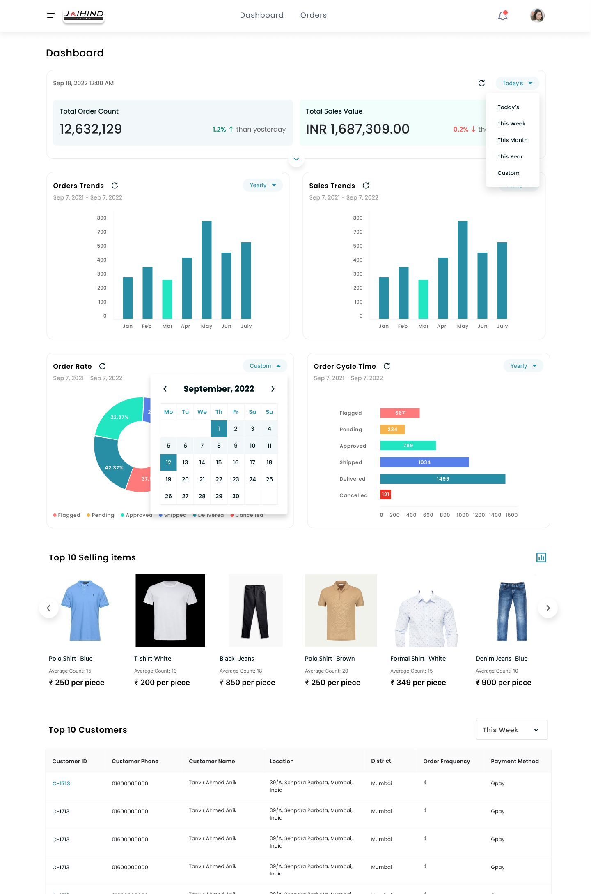
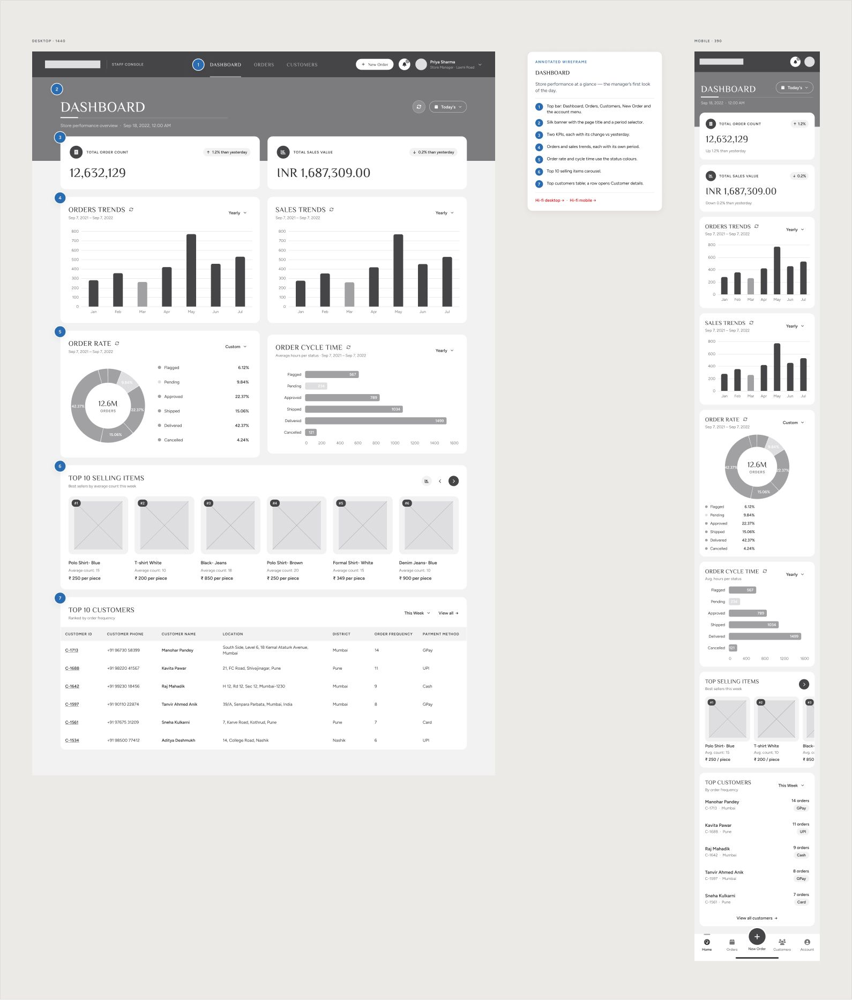
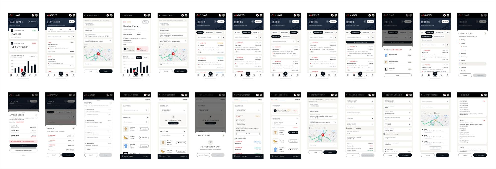

Jai Hind's shoppers saw a polished brand website. Its store staff worked in a plain teal dashboard that only ran on a computer. I redesigned the staff dashboard to look like Jai Hind, work on phones, and share one welcome screen with the shop website.
The redesign, rebuilt in HTML, CSS and JavaScript from my Figma file. Pick a door, approve an order, take a phone order, or flip to Before and Wireframe. All data is placeholder, as in the file, and nothing is sent anywhere.
My role
Product UX Designer, Jai Hind Group
Timeline
Role: Feb 2023 to Jul 2024. Redesign: self-directed.
Team
3 designers and 1 PM on the original platform
Delivered
52 screens, desktop and phone, and a clickable prototype
By the numbers
What the original platform achieved
27%fewer user errorsOriginal platform, after launch
40%faster workflowsOriginal platform, after launch
5 → 1spreadsheets replaced by one platformUsed daily by 3 teams
26staff screens redesigned for desktop and phoneThis redesign
The first three numbers were measured on the platform my team shipped. The redesign is a prototype and has not been tested with staff yet.
In 30 seconds
The short version
Jai Hind is a Pune fashion retailer with 10 stores. Shoppers find the brand online. Store staff take walk-in and phone orders in an internal dashboard.
The problem
Two products that looked like two companies
The staff dashboard looked nothing like the brand, only worked at a desk, hid order statuses off screen and caught stock problems too late.
What I did
Research to prototype
I audited both, sketched ideas, made wireframes, built a style guide from the brand, then redesigned all 26 staff screens for desktop and phone.
The result
One front door
A clickable prototype that joins the shop website and the staff dashboard behind one welcome screen, ready to test with store staff.
Before and after
Same jobs. A much better dashboard.
Staff still do the same daily work. What changed is how it looks, where it works, and how few mistakes it allows.

Before shows the team's console as it was, with the audit's findings pinned in red. Tap a pin to read the finding, then See the fix.
Every change above came from the audit in step 1.
What
Before
After
Try it
Look
Generic teal, no logo
Jai Hind's colors, fonts and photos
Phones
Desktop only
Every screen has a phone layout
Order status
Tabs cut off at the edge
All 9 tabs visible, each with a count
Stock
Checked after approving
Checked before approving
Phone orders
"No customer found" was a dead end
Add the customer right there
Cart
Could show 0 items by mistake
One live cart, always correct
Way in
Separate places for shoppers and staff
One welcome screen, two doors
How I did it
Six steps, from research to a clickable prototype
Understand the problem, explore ideas, fix the layout, style it, design every screen, then wire it up to test.
01
Research: find out what's broken, and for whom
I studied the live website (21 pages) and the team's dashboard (26 screens), then checked the dashboard against 10 standard usability rules. Everything below is coded from my research boards, so you can filter it, flip through it and open each finding in the console.
Heuristic review: 10 findings
The team's 26 screens covered the right jobs. The problems were brand, mobile, status visibility and data consistency, not missing features. Filter by impact, then open any finding in the live console.
Audit findings, their usability heuristic and the fix in the redesign
Impact
Finding
Heuristic
How the redesign fixes it
See it
High
The visual language doesn't match the Jaihind brand: teal accents, generic type, no logo treatment.
Consistency and standards
Site palette, ZCOOL headings, a black header and navy silk page banners.
High
No mobile layouts for staff working on the shop floor.
Flexibility and efficiency of use
26 mobile screens: cards, bottom sheets, a tab bar and a sticky cart bar.
High
Order status tabs run off the screen: In-Transit, Delivered and Cancelled are cut off.
Visibility of system status
Tabs with counts sit in the page banner; scrollable pills on mobile.
Medium
"Edit" opens a panel titled "Create Customer" with a Create button.
Match between system and real world
A dedicated Edit Customer drawer with Save Changes.
Medium
The cart shows 0 items while a product says "1 added".
Visibility of system status
One cart state across the product list, cart and checkout.
Medium
Totals don't add up: a preview shows 2,960 for rows totalling 2,760, and checkout totals conflict.
Error prevention
Recalculated, consistent totals on every step.
Medium
Placeholder data mixes regions: Dhaka delivery zones, +880 and 01600000000 phone numbers.
Match between system and real world
Mumbai and Pune zones, +91 numbers and varied, realistic rows.
Low
"Proceed to Checkout" is disabled with no hint of what is missing.
Help users recognize and recover from errors
A step indicator shows progress; completing fields unlocks the step.
Low
No visible account menu or log out.
User control and freedom
An account menu on desktop and an account sheet on mobile, each with Log out.
Low
Identical repeated rows make tables hard to scan in reviews.
Recognition rather than recall
Varied sample data, status chips and linked customer names.
Three proto-personas
Assumption-based profiles that guided the design. They are hypotheses to test with real customers and store staff, not research findings.
R
Rohan, 27
The occasion shopper
CustomerProto-persona · assumption
Lives in Pune. Shops for weddings, festivals and office wear. Finds brands on Instagram and Google Maps.
Goals
See what’s new before visiting a store
Find the nearest store and get directions
Browse by occasion: ethnic, formal, blazers and suits
Frustrations
Hard to tell which store carries Jaihind or Mewar
Long pages on a phone before reaching store links
Needs from the design
One tap from Welcome to the store
Collections and store links in the menu and footer
Devices: Phone first, sometimes laptop
P
Priya, 34
Store manager, Laxmi Road
EmployeeProto-persona · assumption
Runs daily orders for walk-in and phone customers. Works at the billing counter on desktop and walks the floor with her phone.
Goals
Approve and dispatch orders quickly
Spot flagged, delayed or understocked orders
Look up a customer’s history before calling them
Frustrations
Status tabs and wide tables that don’t fit the screen
Tools that don’t work on a phone
Stock problems discovered only after approving
Needs from the design
Status at a glance with counts
Bulk status change and an inventory check before approving
The same screens on mobile
Devices: Desktop at the counter, plus phone
A
Amit, 23
Floor associate
EmployeeProto-persona · assumption
Helps customers find sizes. Places an order on his phone when an item is out of stock in the store.
Goals
Find a customer by phone number in seconds
Add products and place the order without losing the customer
Tell the customer when to expect delivery
Frustrations
Small tap targets and long forms
No way to see the cart while adding items
Needs from the design
Bottom tab bar and a sticky cart bar
A step indicator through the order
Short, one-column forms
Devices: Phone only
Journey maps
Assumed end-to-end journeys for a shopper and a store manager, from first touch to done. Feelings are hypotheses to validate in store interviews. Pick a stage to see what goes wrong, and what the redesign does about it.
R
Rohan, the occasion shopper CustomerProto-persona · assumption
Scenario: Needs a blazer for a friend’s wedding next weekend and wants to try it on at a store near him.
CuriousUnsureInspiredFrustratedReady to go
Doing
Sees a festive-wear post on Instagram and searches "Jaihind Pune".
Touchpoints
InstagramGoogle search
Pain point
Results mix store listings, social profiles and the website.
Opportunity
✓ In this design
One front door: a Welcome screen for shoppers and staff.
Stage 01 · Discover · feeling: curious
Doing
Opens jaihindretail.com on his phone and meets a long home page.
Touchpoints
Home pageHero carousel
Pain point
No obvious first step; store links sit far down the page.
Opportunity
✓ In this design
"Explore the store" as the single, clear first action.
Stage 02 · Land · feeling: unsure
Doing
Opens the menu, then Collections, then Blazers and Suits, and browses the looks.
Touchpoints
Header menuCollection pages
Pain point
Category names differ between the menu and the footer ("Ocassional Wear").
Opportunity
✓ In this design
Every header, menu and footer link wired on desktop and mobile.
Stage 03 · Explore · feeling: inspired
Doing
Tries to work out which store stocks the brand he likes, and when it opens.
Touchpoints
Brand pagesOur Stores
Pain point
Brand, store and opening details are spread across pages.
Opportunity
→ Recommended next
List the stores that carry each brand, with opening hours.
Stage 04 · Decide · feeling: frustrated
Doing
Taps a store card and follows directions in Google Maps.
Touchpoints
Store cardGoogle Maps
Pain point
Store cards jump straight to Maps, with no phone number or hours.
Opportunity
→ Recommended next
Add "Call store" and opening hours to every store card.
Stage 05 · Visit · feeling: ready to go
P
Priya, store manager EmployeeProto-persona · assumption
Scenario: A busy Saturday at Laxmi Road: walk-ins, phone orders and the evening dispatch.
Opens the staff console on the billing-counter PC and signs in.
Touchpoints
Employee login
Pain point
Staff tools live at a separate address that looks nothing like Jaihind.
Opportunity
✓ In this design
"Employee login" on the shared Welcome screen.
Stage 01 · Sign in · feeling: routine
Doing
Scans order count, sales, order rate and cycle time for her store.
Touchpoints
DashboardPeriod menu
Pain point
A generic teal dashboard with placeholder data from another region.
Opportunity
✓ In this design
Jaihind-branded KPIs and charts with clear periods and comparisons.
Stage 02 · Check the day · feeling: in control
Doing
Filters pending orders, checks stock and approves them in bulk.
Touchpoints
All OrdersStatus tabsChange Status
Pain point
Status tabs run off the screen; stock problems surface only after approving.
Opportunity
✓ In this design
Tabs with counts, bulk Change Status and an inventory check on Approve.
Stage 03 · Process orders · feeling: slowed down
Doing
A regular calls: she finds him by phone number, adds items and checks out.
Touchpoints
Create Sales OrderProduct searchCart
Pain point
"No customer found" is a dead end while the caller waits; the cart shows 0.
Opportunity
✓ In this design
Add the customer inline, a 4-step indicator and one live cart.
Stage 04 · Phone order · feeling: under pressure
Doing
Assigns delivery partners and marks orders In-Transit or Delivered.
Touchpoints
Change StatusPreview tableToast
Pain point
Preview totals don’t add up and nothing confirms the change.
Opportunity
✓ In this design
A preview with correct totals, then a toast confirming the update.
Stage 05 · Close out · feeling: relieved
Shoppers drop off at Decide
The site inspires, but brand, store and opening details are scattered. The redesign gives one clear way in; richer store details are the next fix.
Staff stress peaks on phone orders
The customer is waiting on the line. Inline Add customer, a step indicator and one cart state keep the order moving.
One front door serves both
A shared Welcome screen removes the which-site question and makes the console feel like part of Jaihind.
User flows
The three flows that carry the most weight. Each one maps to screens in the redesign, so each one opens in the live console.
Start / endScreenDecisionFeedbackError state
1
Entry: choose a door
Everyone starts on Welcome. Shoppers go straight to the store; staff sign in and land on Dashboard.
Open jaihindretail.com
Welcome
Shopper or staff?
Explore the store
Home→Collections and brands→Store locations→Directions in Google Maps
Employee login
Employee login→ID and password valid?→Dashboard→Start the day
If not valid: Inline error, and try again
Back on Employee login, and Log out in the console, both return to Welcome.
On mobile the two doors stack; Employee login opens full screen with the same fields.
Customers never see staff navigation. Staff always land on Dashboard after signing in.
2
Create a sales order
A customer calls or walks in. Staff find them by phone number, build the cart and check out. Every dead end has a way forward.
1 · Customer
New Order→Search customer by phone→Customer found?→Customer details and order history
Not found: No customer found→Create customer
2 · Products
Search products, add to cart→Cart empty?
Empty: No products in cart, back to search
3 · Delivery and payment
Delivery and payment→Address and payment set?
Not set: Add new address, then continue
4 · Checkout
Checkout, review order→Order placed→Order lands in Pending
10 screens4 stagesDesktop and mobile
3
Change order status
Select one or many orders, choose a new status, and confirm. Approve checks stock first; In-Transit and Delivered show a preview before anything changes.
Gray boxes only, desktop and phone side by side, with numbered notes that explain each decision. No colors yet, so the conversation stays on structure.
Dashboard: key numbers first, then trends, then top products and customers.
Sales order: 4 clear stages (Customer, Products, Delivery and payment, Checkout), with the cart always in view.

04
Style guide: borrow the brand, don't invent one
I pulled the colors, fonts and photos from Jai Hind's website and turned them into a small design system, so the dashboard feels like the same company.
37colors
17text styles
13components
10order status colors
2screen sizes: 1440 and 390
4 ptspacing scale
The style guide, live
The 37 color variables and 17 text styles from the Figma file, pulled from the Jaihind website. Every fill in the console is bound to one of these. Tap any swatch to copy its hex.
Brand
From the website: near-black ink, navy silk, the red of the logo and a warm gold.
Surface, border and text
Warm off-white pages with white cards; two border weights; four text levels.
Status
Ten order statuses, each a text color on a tinted background. Used for chips, tabs, charts and the order-rate legend.
Pending
Flagged
Approved
Processing
Shipped
In-Transit
Delivered
Cancelled
Returned
Damaged
Type
Two families: ZCOOL XiaoWei for display, navigation, buttons and numbers; Figtree for everything you read.
Display/XL 44ZCOOL XiaoWei · 44/52Dashboard
Display/L 32ZCOOL XiaoWei · 32/40Create sales order
Display/M 28ZCOOL XiaoWei · 28/34Order placed
Heading/H2 22ZCOOL XiaoWei · 22/28Approve order
Heading/H3 18ZCOOL XiaoWei · 18/24Orders trends
Nav/Item 15ZCOOL XiaoWei · 15/20Orders
Button/Label 15ZCOOL XiaoWei · 15/20Place Order
Button/Label S 13ZCOOL XiaoWei · 13/18Add to Cart
Body/M 14Figtree Regular · 14/20Track, approve and dispatch orders across every store
Body/M Medium 14Figtree Medium · 14/20Manohar Pandey
10 of the file’s 13 components are below, so you can press them. The other three, the desktop top bar, the mobile top bar and the tab bar, run the console itself.
Button
Pill buttons in seven styles and two sizes. Primary marks the one main action in a view.
Input
Text, select, search and date fields. The label sits inside the field, like the website’s forms.
Icon button
Circular, icon-only actions for well-known jobs, in four styles and two sizes. Each has a label for screen readers.
Status chip
One chip per order status, plus VIP and Fraud tags for customers.
Radio buttons for a single choice; checkboxes for bulk selection in tables.
Filters and tabs
Filter pills for zones and periods; status tabs with counts in the orders banner. Tap them.
Product row
Add to Cart turns into a quantity stepper once added. Try it.
Polo Shirt- Brown₹ 275.00
Pagination
Compact pagination for long tables, with first, previous, pages and next.
Page 1 of 12
05
Final design: 26 screens, desktop and phone
Every screen from the team's dashboard, redesigned at desktop and phone sizes, plus the new welcome and login screens. The work staff already knew stayed the same; the friction went away.
Take a phone order
Find the customer by phone number, add products, and watch one cart update everywhere.
Check stock before approving
If an item is short, staff see it before the order moves, and can split it into a sub-order.
Review and place the order
Everything on one screen, with totals that add up on every change.
06
Prototype: click through it like the real thing
In Figma I connected 118 screens with 2,104 interactions into one prototype, with separate desktop and phone flows. Beside this is the phone version rebuilt in code: same screens, a tab bar, cards instead of tables and a sticky cart bar.
Welcome, then Explore the store, opens the shop website.
Welcome, then Employee login, opens the dashboard, orders, customers and the 10-step sales order.
Log out always brings you back to Welcome.

Results
What's proven, and what's next
Measured
The original platform
27%fewer user errors after launch
40%faster workflows across 3 teams
5spreadsheets replaced by one platform
2clicks or fewer for the most frequent tasks
Not yet measured
Targets for testing the redesign
< 2 minto take a phone order with three items
90%of managers spot flagged orders on the first click
≤ 3taps from Welcome to store directions
0wrong orders when updating five at once
Test plan: moderated sessions with 5 to 6 store staff (managers, billing, floor associates) and 5 shoppers.
What I learned
Three things I'd tell my past self
1
Audit your own work with fresh eyes
The platform worked, and a simple audit still found 10 problems.
2
Design for the shop floor, not just the desk
Staff walk the floor with phones, so every screen now has a phone layout.
3
Label guesses as guesses
Personas and targets stay marked as assumptions until real users test them.
Want the full walkthrough?
I'm happy to walk through the Figma file and the prototype on a call.